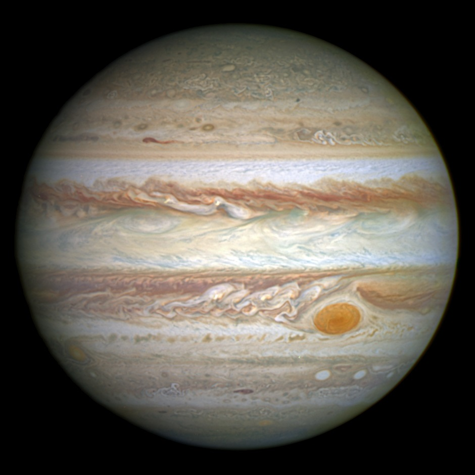

.png)
Mercúrio:
Mercúrio é o planeta mais próximo do Sol, e o menor do Sistema Solar. Sua órbita leva em média, o equivalente a 87,969 dias terrestres. Apesar de estar mais próximo do Sol, ele não é o planeta mais quente, pois este título vai para Vênus. Sua temperatura média máxima é de 427 °C, e sua mínima é de -183 °C. Ele, assim como a Terra, Vênus e Marte, é um planeto rochoso, apresentando materiais como material metálico e silicatos. Sua superfície apresenta crateras, graças aos impactos de meteoros, mas também apresenta superfície "lisa". Por estar muito próximo ao Sol, e ser pequeno, não aapresenta nenhum satélite natural em sua órbita.
Vênus:
Vênus é o segundo planeta mais próximo do Sol, e o mais quente do Sistema Solar. Possui 800 milhões de anos e assim como a Terra, Vênus é um planeta rochoso, e sua atmosfera é composta por dióxido de carbono, o que influencia diretamente em seu forte efeito estufa. Por isso, sua temperatura pode chegar a 460 °C. É o mais parecido com a Terra em quesito de tamanho, forma e composição, e o mais próximo também. É um dos planetas mais reluzentes do céu aqui da Terra, e uma rotação em torno de si mesmo, são 243 dias terrestres. Uma translação, são 224 dias. Vênus não possui satélites naturais, e tem 95% do tamanho da Terra.
Terra:
A Terra é o terceiro planeta em quesito de distância do Sol, e está localizado na chamada Zona Habitável do Sistema Solar. Ela tem uma atmosfera complexa, com diversas camadas, que facilitou o mantimento da temperatura ideal para que houvesse formas de vida complexas, sendo o único planeta do Sistema Solar a conseguir isso. Apresenta um diâmetro de aproximadamente 12.756Km. Sua estrutura interna apresenta: crosta, manto, núcleo externo e núcleo interno. Sua temperatura média é de aproximadamente 15°C, e consegue suportar vida. Por conta de suas grandes concentrações de água, cerca de 70%, é chamado de Planeta Água. Assim como outros planetas, possui nuvens, mas estas são compostas de água e ar.
Marte:
Marte é o quarto planeta de distância do Sol, sendo um pouco menor que a Terra, e o segundo menor do Sistema Solar, apresentando uma cor avermelhada. Seu diâmetro, é de aproxim. 6.787Km, e sua temperatura média é de -60°C. É um dos planeta rochosos, e apresenta uma atmosfera fina. Apresenta em seu interior, Ferro, Níquel e Enxofre, e sua superfície é composta por óxido de ferro, o qual dá sua cor avermelhada. Algumas pesquisas recentes apontam para a existência de vida micróscopica no planeta, sem ser do nível terrestre. Além de Vênus, é bem próximo da Terra, e futuras missões espaciais, buscam explorá-lo ainda mais.
Júpiter:
Júpiter é o quinto planeta mais próximo ao Sol, e é também o maior planeta do Sistema Solar. É um dos planetas gasosos, e seu diâmetro é de, aprox., 142.984Km. Ele é composto majoritariamento por hidrogênio e hélio, e seu núcleo é formado por elementos mais pesados. Possui 95 satélites, de acordo com Wikipedia, e uma poderosa magnetosfera. Possui um atmosfera gicantesca e nuvens compostas por cristais de amônia e possivelmente hidrossulfeto de amônio. Júpiter também é conhecido pela Grande Mancha Vermelha, que é uma "tempestade" anticiclônica persistente, que está ativa, possivelmente, desde 1665. A temperatura média de Júpiter é de -110°C.
Saturno:
Saturno é o sexto planeta mais próximo do Sol, e é mais conhecido pelos seus anéis. É um pouco menor que Júpiter, com um diâmetro de 120.536Km, sendo o segundo maior planeta do Sistema Solar. Os anéis de Saturno consistem em incontáveis pequenas partículas, cujo tamanho varia de micrômetros a metros, em órbita ao redor de Saturno. As partículas dos anéis são compostas quase totalmente de gelo de água, com um componente residual de material rochoso. Saturno é também um gigante gasoso, assim comoJúpiter, e é composto majoritariamente por hidrogênio, hélio e um pouco de metano. Sua temperatura média é de -139°C.
Urano:

Urano é o sétimo planeta mais próximo do Sol, e também é um gigante gasoso. Possui um sistema de anéis, satélites naturais, sendo 27 ao todo e nuvens. Apresenta uma composição similar com a de Júpiter e Saturno, contendo hidrogênio e hélio, e "gelos", tais como água, amônia e metano, assim como traços de hidrocarbonetos, e possui também uma coloração azulada. É conhecido também por sua incrível inclinação de 97,77 graus. Sua temperatura média é de -220°C, sendo o planeta mais frio do Sistema Solar. Leva 84 anos terrestres para dar uma volta completa no Sol e 17 horas para girar em torno de si mesmo. Sua descoberta foi em 1781, por William Herschel.
Netuno:
Netuno é o planeta mais distante do Sol, pertencente ao grupo dos gigantes gasosos, possui um tamanho ligeiramente menor que o de Urano, e uma coloração quase idêntica, mas maior massa. Sua idade é de aproximadamente 4,5 bilhões de anos. Tem um diâmetro de 49.000Km e sua atmosfera é composta por hidrogênio, hélio, metano, entre outros. Sua temperatura média é de -223,15°C. Foi descoberto por Galileu Galilei, em 1612. Possui magnetosfera, nuvens e algumas tempestades, como júpiter. Leva 16 horas terrestres para completar sua rotação, e 165 anos para completar uma translação. É o único planeta do Sistema Solar que não é visível a olho nu.
Tabela de dados planetais:
| Planeta | Diâmetro (Km) | Massa (10²³kg) | Densidade (g/cm³) | Satélites naturais |
|---|---|---|---|---|
| Mercúrio | 4.878 | 3,3 | 5,4 | - |
| Vênus | 12.120 | 48,7 | 5,2 | - |
| Terra | 12.756 | 59,8 | 5,5 | 1 |
| Marte | 6.787 | 6,4 | 3,9 | 2 |
| Júpiter | 142.984 | 18,991 | 1,3 | 63 |
| Saturno | 120.536 | 5.686 | 0,7 | 62 |
| Urano | 51.118 | 866 | 1,3 | 27 |
| Netuno | 49.660 | 1.023 | 1,6 | 14 |